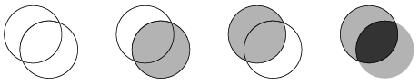
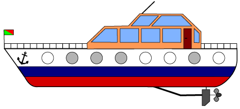
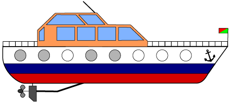

透明（とうめい）か灰色の窓（まど）をもつ船があります。
船の横から見ると，反対側の窓（まど）が透（す）けて見え，もう一方の窓（まど）の色によって，どのように見えるかが変わります。
両方とも透明（とうめい）なら透明（とうめい）に，ひとつが透明（とうめい）でもう一つが灰色なら灰色に，両方とも灰色なら黒く見えます。

船長のビ太郎は船の両側の窓（まど）の色を次の絵のように決めました。
|  |  |
横から見たときにどのように見えるでしょうか？横から見ると反対側の窓（まど）はすけて見えています。